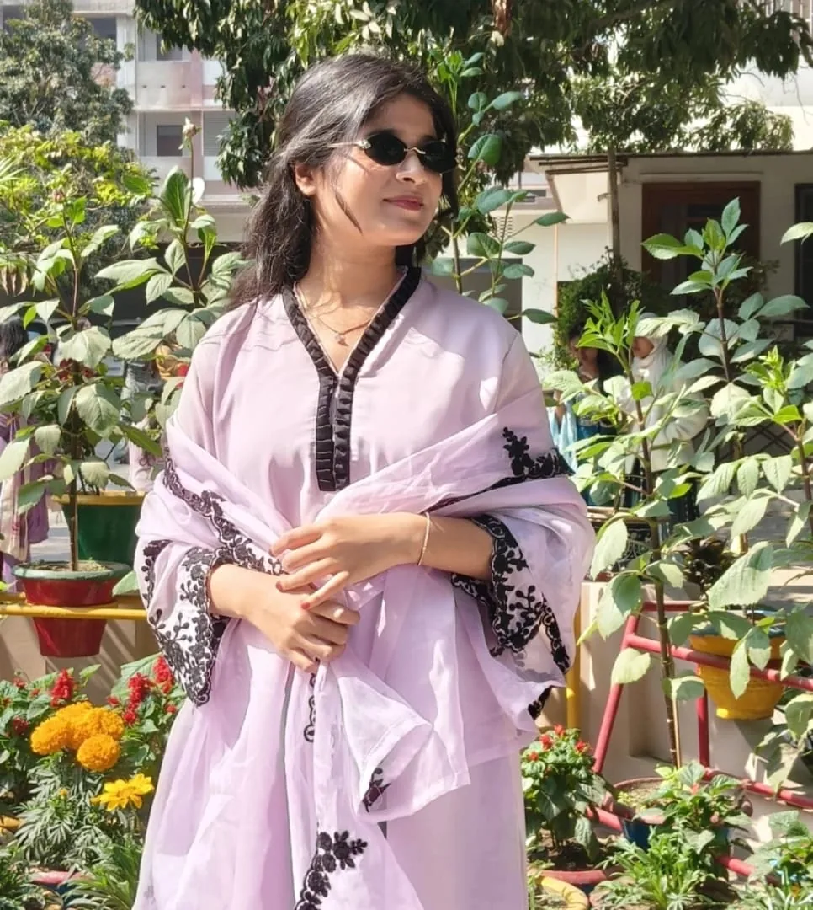
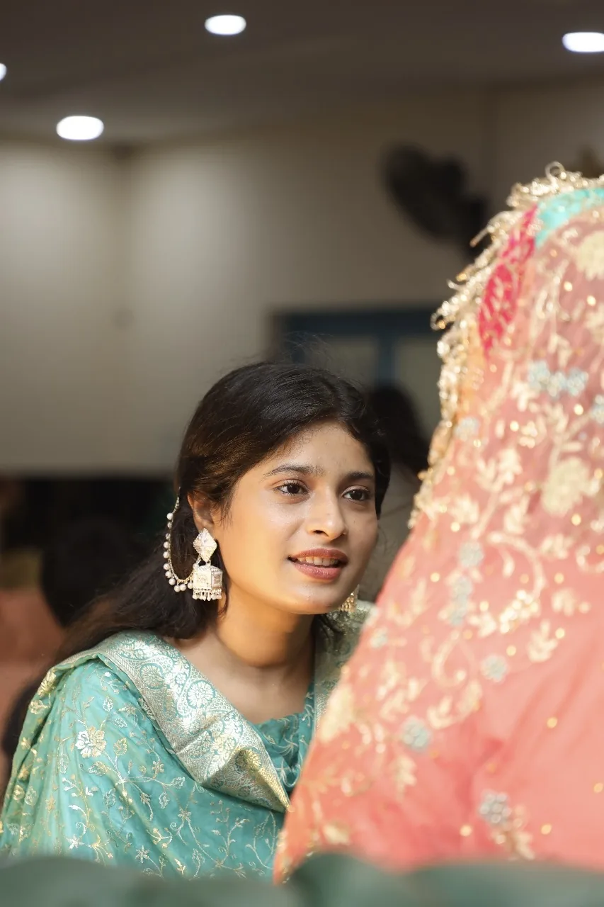

a little corner of the internet • made with love
For the girl who makes
ordinary moments feel special.
I made this little place for you because sometimes a simple “sorry” doesn't feel big enough for what I actually want to say.
↓ read my heartHey, my favourite person…
I know today's call was only 9 minutes. Nine tiny minutes. But honestly, I know that sometimes it isn't about the number on the clock. It's about the feeling you are left with after the call ends.
And if I made you feel like I didn't have enough time for you, or like talking to you was something I was rushing through, I'm genuinely sorry. That was never what you deserved from me.
You deserve the version of me that listens properly, stays a little longer, asks one more question, laughs at the silly things, and doesn't make you wonder whether I actually wanted to be there.
I can't change those nine minutes now. But I can make sure they don't become a measure of how much you mean to me. Because they aren't. You mean so much more.
So this is my very simple, very honest apology: I'm sorry, jaan. Not because I want to end the conversation quickly, but because I want you to know that your time, your feelings, your little stories and even your random बातें are precious to me.
with all my heart ♡
Every picture has
a different kind of magic.
And somehow, every version of you manages to make me smile.


Next time, I'll try to give you
more than nine minutes.
More time. More attention. More patience. More silly conversations. More “wait, don't go yet.” More moments where neither of us has to look at the clock.
and before you leave…
I hope you know
you are loved.
Today's nine-minute call may have been short,
but what I feel for you isn't measured in minutes.
tap it… I made something happen ♡